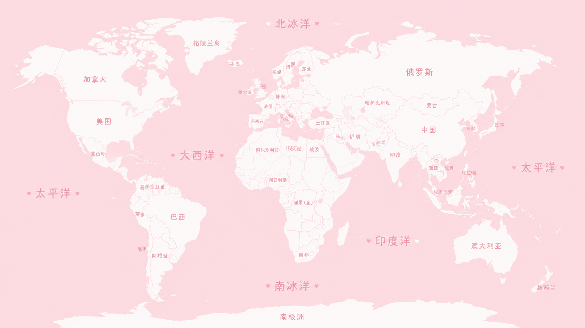

Pink World Map
选择国家
0 个地点
0 张照片
选择国家后，在下方地图记录你们到过的具体地点。
编辑模式下，在国家地图空白处点击可以添加地点；滚轮可缩放，拖动可移动地图。
选择一个国家
先在下拉框里选择国家，再记录你们的具体地点。
World Map

Pink World Map
选择国家后，在下方地图记录你们到过的具体地点。
编辑模式下，在国家地图空白处点击可以添加地点；滚轮可缩放，拖动可移动地图。
先在下拉框里选择国家，再记录你们的具体地点。